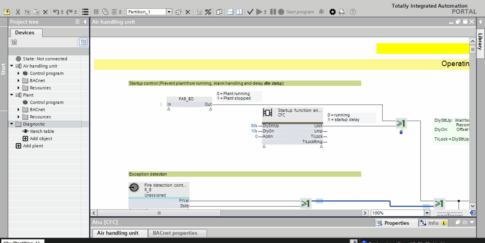
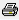

使用趋势视图
您想要创建趋势视图、配置它并打印内容。
Trend view

Create the Trend view
使用趋势视图来分析运行时引脚的值。
- Go to Programming and click
 or
or  on the toolbar. See Programming for more information.
on the toolbar. See Programming for more information.
- In the Plants navigation view, expand the Diagnostic folder. See Plants navigation view for more information.
- Double-click Add object.
- The Add diagnostic object dialog box displays.
- In the Type field, select Trend view. Enter the name for the watch table in the Name field and click OK.
- You have created a Trend view. Two screens appear for the Trend view, a table and a graph.
Configure the Trend view
您想要配置趋势视图。
- You have added the Trend view.
- Select the pins from the chart for which you want to create a Trend view.
- Drag the selected pins from the chart to the Trend view.
- The pin information displays in the trend table and a corresponding graph displays in the trend graph.
- You can see a runtime trend graph of the pin data with respect to time.
Print the Trend view
您想要打印趋势视图内容。
- You have created and configured a Trend view.
- Go to the trend graph and click Print on the toolbar.
- In the Print dialog box that opens, enter the comment for the printout.
- Click Print.
- Select a format for the print and click OK.
- A print preview dialog box opens.
- Check the contents of the trend graph in the preview and click

. - Select the folder to save the print and click Save.
- You have printed the contents of the Trend view.